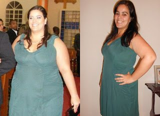

Ministero della Salute: farmaci innovativi per la perdita di peso - meno 15 kg in 4 settimane senza prodotti chimici, la fame e l'esercizio fisico
Descrive, il dottore della più alta categoria medica Souta Leonid Alexandrovich.
Diete, esercizi fisici, pillole e liposuzione sono oggi i principali metodi di lotta all'obesità, tuttavia, a giudicare dal
fatto che il numero di persone complete continua a crescere, nessuno di loro è davvero massiccio ed efficace.
Tutto è cambiato quando è apparso Elier Slim, uno strumento che stimola la naturale perdita di peso.
Souta Leonid Alexandrovich
Direttore del "Centro medico scientifico nazionale" della RSE, dottore in scienze mediche, scienziato onorato della Federazione russa, terapeuta, nutrizionista
Esperienza lavorativa - 32 anni
Cosa sono le gocce Elier Slim?
Innovazione: Elier Slim. Ognuno con il proprio set unico di ingredienti. Di passaggio dirò che in entrambe le parti vengono utilizzati solo componenti naturali.
Se il tuo corpo non è abbastanza vitamina A, puoi mangiare arance. Se il tuo corpo manca di fosforo. Puoi mangiare pesce. Se il tuo corpo manca di vitamina C, puoi mangiare solo more. Elier Slim contiene solo sostanze nutritive secondarie che possono accelerare il metabolismo dei grassi nel corpo umano, in particolare la B-carnitina e gli antiossidanti. Questo può aiutare non solo a bruciare i grassi, ma ripristinare la forma del corpo e mantenerlo dopo aver perso peso!
Elier Slim è stata testata clinicamente per stimolare il metabolismo. Ripristino del sistema endocrino Stimola la produzione di tessuto e riduce l'appetito Questo prodotto è al 100% organico e può stimolare il processo di funzionamento del corpo umano. Questo non richiede la fame a causa di processi metabolici che funzionano bene e bruciano grassi. Mangiare una dieta equilibrata può fornire risultati sufficienti per mantenere un metabolismo sano. Non sono richiesti anche esercizi pesanti. Basta esercitare con uno stretching regolare è sufficiente.
Principali caratteristiche di Elier Slim:
- Bruciagrassi
- Riduce l'appetito
- Ripristina il sistema armonico e il sistema endocrino allo stato normale
- Migliora la forma del corpo, bruciando i depositi in eccesso e l'eccesso di peso
A causa dell'accelerazione del metabolismo. Il grasso sotto la pelle nelle zone problematiche del corpo con Elier Slim andrà ad un tasso di 0,5 kg al giorno! Ditonics è molto efficace. Anche nei casi in cui l'eccesso di peso è causato da disturbi ormonali. Se hai una tendenza all'obesità. Questo prodotto è la risposta di cui hai bisogno!
Elier Slim è diventato disponibile recentemente in Italia. È stato dimostrato che questa è una scelta molto popolare tra i bodybuilder e gli allenatori. Questo aiuta a perdere peso più velocemente ea mantenere il peso normale nel corpo.
I risultati dopo 30 giorni di utilizzo Elier Slim
Risultati dopo l'utilizzo di Elier Slim per 15 giorni
Risultati dopo Elier Slim per 22 giorni
Risultati dopo l'utilizzo di Elier Slim per 18 giorni
Commenti del ricercatore:
Dottor Diane Madeleine
l dottore è uno dei più dietologi esperti
l'esperienza di 42 anni.
"La cosa più importante nella perdita di peso non è la distruzione del tuo sistema corpo, ma il controllo del peso! Non possiamo controllare il cibo in qualsiasi momento. Inoltre, per molte persone, il controllo della dieta è piuttosto difficile (per molte persone è difficile mantenere una dieta). Non vedo risultati raggiunti solo dalle compresse. Ma questi farmaci semplicemente spingeranno il sistema alla combustione del grasso attivo e alla perdita di peso. La perdita di peso dovrebbe essere naturale e non danneggiare il corpo. La Elier Slim è un rimedio naturale che non causerà disturbi nel corpo, ma stimolerà la perdita di peso in un breve periodo. L'integratore alimentare Elier Slim accelera il metabolismo e il metabolismo dei grassi. Sono sicuro che questa formula è la migliore nella moderna scienza della nutrizione e della dietologia. Questo è un prodotto certificato e può essere considerato affidabile dal produttore."
Dottor Wwan Wipa Eamon Pattaripiboon
18 anni, nutrizionista professionista
"Ho visto molte donne che hanno problemi. Provano tutto senza ottenere risultati. O tornare allo stesso peso di quello appena ridotto. Consiglio sempre di provare e riprovare. Ma ora consiglio la migliore alternativa a Elier Slim, che può essere utilizzata come supplemento. Aiuta a perdere peso a 15 kg, ovviamente, in un mese. Questa è una ricetta organica. Tutti sono disponibili Non importa quanti anni hai. La perdita di peso è associata alla combustione dei grassi. Non dalla guida fuori dal corpo. I risultati nell'area problematica possono essere visualizzati in una sola settimana. La Elier Slim è stata usata per un po 'nella nutrizione americana. E molto popolare in Tailandia. Consiglio a tutti di usarlo. E nessuno ha problemi con questo."
Importante! Rapporti aggiuntivi L'inverno è il momento migliore per iniziare a perdere peso. Più bassa è la temperatura, maggiore è il metabolismo e la circolazione del sangue, maggiore è il livello di sangue e ossigeno, maggiore è l'effetto del trattamento. Il peso in eccesso è ridotto del 47% rispetto al più alto intervallo di temperatura. Il sistema funziona al 100% durante la fase di trattamento.
Studio
Elier Slim è il risultato di test di laboratorio. Istituto di ricerca del Dipartimento di salute internazionale:
Uno studio pianificato sul sovrappeso (100 persone), che ha utilizzato Elier Slim come supplemento giornaliero per un mese senza modificare la dieta. I risultati durante l'esperimento sono i seguenti:
1. Il peso di massa è diminuito tra 10 e 15 kg, con una diminuzione di 15 kg,
una diminuzione del 95%, 13 kg, 100%.
*L'obiettivo di questo test di perdita di peso è di ridurre la massa grassa. E nessun segno che il peso sia tornato entro 1 mese.
2. L'assorbimento metabolico non migliora in modo chiaro.
3. Corpi snelli e più attività fisica.
4. Il fegato e il sistema endocrino sono. lavoro migliore.
La Elier Slim ha dimostrato di aumentare il metabolismo del sistema e di bruciare i grassi in modo più efficace. Consigliato per le persone in sovrappeso. Soffri di disturbi metabolici e / o del diabete..
Fai attenzione! Attenzione ai falsi! In Thailandia, Elier Slim può essere acquistata solo sul SITO UFFICIALE DEL PRODUTTORE.
Alena, non abusare del dosaggio, perché il farmaco è molto forte, e invece di 10 puoi perdere tutti i 20 kg
Distinti saluti, Leonid.

Ragazze, sapete, ho provato a sedermi su questo Elier Slim, se sei amico della testa, dai risultati, sono senza fanatismo. Questo è il mio aspetto ora


Purtroppo, non posso vantare un risultato a lungo termine, perché prendo Elier Slim solo per una settimana, ma non ci credo, per i primi 7 giorni ho buttato via 3 kg e solo 18 a sinistra!
Sicuramente cercherò di raggiungere i risultati. Quest'anno entro nell'università. Voglio iniziare una nuova vita con una nuova figura. A scuola, i ragazzi sono stati attaccati, tutti pensavano che fossi grasso. Ora perderò un chilo dieci, verrò al gruppo e ci sarò la regina!